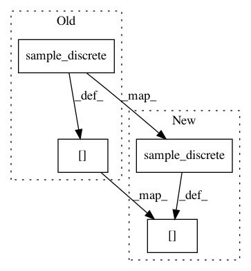

dd25b0e36c5808a4ef6428b14cf9f39d3b0dd5ea,pgmpy/inference/Sampling.py,BayesianModelSampling,forward_sample,#BayesianModelSampling#Any#,32
Before Change
weights = list(map(lambda t: cpd.reduce(t, inplace=False).values, evidence))
sampled[node] = sample_discrete(cpd.variables[cpd.variable], weights)
else:
sampled[node] = sample_discrete(cpd.variables[cpd.variable], cpd.values, size)
return sampled
def rejection_sample(self, evidence=None, size=1):
After Change
weights = list(map(lambda t: cpd.reduce(t, inplace=False).values, evidence))
sampled[node] = list(map(lambda t: State(node, t), sample_discrete(states, weights)))
else:
sampled[node] = list(map(lambda t: State(node, t),
sample_discrete(states, cpd.values, size)))
return sampled
def rejection_sample(self, evidence=None, size=1):
In pattern: SUPERPATTERN
Frequency: 5
Non-data size: 4
Instances
Project Name: pgmpy/pgmpy
Commit Name: dd25b0e36c5808a4ef6428b14cf9f39d3b0dd5ea
Time: 2015-06-17
Author: ankurankan@gmail.com
File Name: pgmpy/inference/Sampling.py
Class Name: BayesianModelSampling
Method Name: forward_sample
Project Name: pgmpy/pgmpy
Commit Name: be9e802ca0cfb546de1723f274f24a3c4bad3d6c
Time: 2015-06-07
Author: pratyaksh@me.com
File Name: pgmpy/inference/Sampling.py
Class Name: BayesianModelSampling
Method Name: rejection_sample
Project Name: pgmpy/pgmpy
Commit Name: fd6314842ffe8cd2d7ddf5dcaf044dc8736df0d0
Time: 2015-11-18
Author: ankurankan@gmail.com
File Name: pgmpy/inference/Sampling.py
Class Name: BayesianModelSampling
Method Name: likelihood_weighted_sample
Project Name: pgmpy/pgmpy
Commit Name: be9e802ca0cfb546de1723f274f24a3c4bad3d6c
Time: 2015-06-07
Author: pratyaksh@me.com
File Name: pgmpy/inference/Sampling.py
Class Name: BayesianModelSampling
Method Name: likelihood_weighted_sample
Project Name: pgmpy/pgmpy
Commit Name: b6b39fc69944e9b08a7ad9172c1fa4e500ab64b9
Time: 2015-11-18
Author: ankurankan@gmail.com
File Name: pgmpy/inference/Sampling.py
Class Name: BayesianModelSampling
Method Name: forward_sample